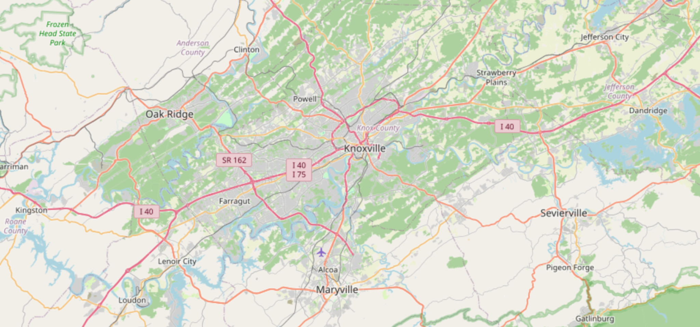

It looks like the same decision
Two retirees both choose Knoxville, Tennessee.
Same city. Same regional identity. Same general climate.
From the outside, it looks like the same retirement decision.
But day-to-day retirement life can be completely different depending on which ZIP code they actually choose.
Knoxville is one city—but not one retirement answer
On a map, ZIP 37919 and ZIP 37902 sit inside the same Knoxville area. That makes them look like similar retirement choices from a distance.
But when you look closer, the ZIP-level story changes fast.
This is where a Knoxville ZIP code comparison reveals differences you will not see at the city level.

The RSZ healthcare snapshot
Instead of relying on broad city averages, a ZIP-level comparison makes the healthcare differences immediately visible.
ZIP 37919
A higher-cost ZIP with stronger provider depth, broader care categories, and a larger retirement-age presence.
4.6 mi
17 within 50 mi
2,068 clinicians
ZIP 37902
A smaller, premium-priced ZIP where hospital distance is close, but local provider depth and care-category coverage are much thinner.
1.0 mi
17 within 50 mi
2,068 clinicians
Data based on the RetireSmartZIP MVP3 healthcare and community snapshot. The point is not that one ZIP is automatically “better.” The point is that the tradeoffs are different.
ZIP 37919 vs 37902: Key Differences
- Healthcare depth: 37919 has significantly more clinicians and care categories.
- Hospital proximity: 37902 is closer to a hospital but has limited local provider support.
- Retirement population: 37919 has a higher share of retirement-age residents.
- Tradeoff: 37902 offers close hospital proximity; 37919 offers stronger long-term healthcare depth.
Why this matters
Retirement location decisions are usually framed around cities, states, taxes, and home prices. Those factors matter, but they do not tell the whole story.
Healthcare access is not evenly distributed across ZIP codes—even within the same city like Knoxville. Provider supply does not always follow home values, and a ZIP with a premium location can still have important tradeoffs for aging in place.
That is why a city-level retirement list can be useful as a starting point—but incomplete as a final decision tool.
A city can look perfect on paper—but the wrong ZIP can quietly change the outcome.
Want the broader framework? Read why ZIP codes matter more than cities in retirement.
The real question is not “Should I retire in Knoxville?”
A better question is:
One ZIP may offer stronger healthcare depth. Another may offer a premium downtown feel. Another may offer better affordability. None of those answers are automatically right or wrong.
The point is to see the tradeoffs before you move.
How RetireSmartZIP helps
RetireSmartZIP is built to make those tradeoffs visible at the ZIP-code level.
- Start with a city you know.
- Compare nearby ZIPs side by side.
- Look at housing, climate, healthcare, and community signals.
- Use the data to decide which ZIP deserves a deeper look.
The goal is not to declare one place “best.” The goal is to help you see whether a ZIP actually works for your retirement priorities.
Frequently Asked Questions
Does ZIP code really matter for retirement?
Yes. Housing, healthcare access, hospital proximity, and community characteristics can vary significantly between ZIP codes—even within the same city.
Is Knoxville a good place to retire?
Knoxville can be a strong place to retire, offering a mild climate, access to healthcare, and a lower cost of living than many major cities.
However, retirement outcomes can vary significantly by ZIP code. Differences in healthcare access, provider availability, hospital distance, and community characteristics can change the day-to-day retirement experience within the same city.
That’s why evaluating retirement at the ZIP-code level—not just at the city level—leads to better decisions.
How can I compare ZIP codes for retirement?
RetireSmartZIP helps compare ZIP-level signals such as housing, climate, healthcare access, and community context so you can decide which locations deserve a deeper look.
What should I look for in a retirement ZIP code?
Key factors include healthcare access, hospital distance, provider availability, housing costs, and the local retirement-age population. These signals often vary significantly between ZIP codes in the same city.